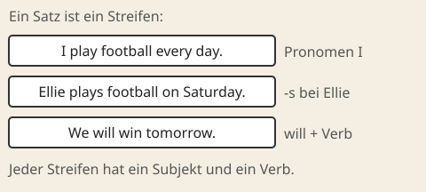

Das brauchst du hier
Mit einem KI-Tutor lernen
Ein KI-Tutor erklärt dir diese Seite und hilft dir bei den Aufgaben. Wähl deinen Assistenten:
Mit Claude öffnen Mit ChatGPT öffnen Mit Mistral Vibe öffnen
Du nutzt dein eigenes Konto beim Anbieter. Der Assistent ist kein Angebot von lernapps.net: lernapps liefert nur Inhalte und Aufgaben. Die Wahl gilt für alle Seiten, nur auf diesem Gerät.
Das solltest du schon können
Kannst du das schon? Du brauchst drei Dinge aus früheren Seiten. Erstens die Personalpronomen (I, he, they). Zweitens das simple present mit dem -s bei he, she und it. Drittens das will-future, also will plus Verb. Ein Satz hat ein Subjekt (wer?) und ein Verb (was passiert?). Die Tabelle ist ein Stück vom Klassenzimmer-Poster: Es sammelt Wörter und Formen.
| Baustein | Beispiel |
|---|---|
| Personalpronomen | I, you, he, she, it, we, they |
| simple present mit -s | Ellie plays football. |
| will plus Verb | We will win tomorrow. |
Nicht sicher? Hier kannst du es nachlesen: Personalpronomen, simple present und will-future.
Die Satzstreifen-Wand
Mr Hill hängt ein Brett an die Rückwand des Klassenzimmers: die Satzstreifen-Wand. Auf jeden Streifen kommt ein ganzer Satz. Mit bunten Karten verbinden die Kinder die Streifen.

© CC-BY-4.0Ein Satz, ein Streifen. Jeder Streifen hat ein Subjekt und ein Verb.
Auf der nächsten Seite hängen die Kinder die erste bunte Karte zwischen zwei Streifen.
Fehler gefunden oder eine Idee für diese App?